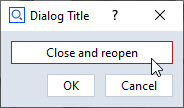

dialog_reopen_example

Short description
This examples demonstrates, how a dialog can be closed from its own handler, just to be opened again.
Warning
There are very rare occasions, where you should need this. Use this approach only, if you know what you are doing.
Highlights
The approach consists of two steps. First, declare a guard variable that yields True if the dialog should be reopened.
[...]
reopen = True
while reopen:
gom.script.sys.show_user_defined_dialog (dialog=DIALOG)
The example dialog contains a button to close/reopen the dialog (see top image). One of the few use cases could be, that you need to adapt the filter property of an Selection element widget after some dialog interaction, which can only be done when the dialog is closed.
To achieve this, the dialog event handler is used:
def dialog_event_handler (widget):
global reopen
if str(widget) == "initialize":
reopen = False
if widget == DIALOG.button:
gom.script.sys.close_user_defined_dialog (dialog=DIALOG)
gom.script.sys.delay_script (time=1) # Do stuff while dialog is closed
reopen = True
Warning
Never reopen the dialog directly from its own handler to prevent getting undefined behaviour.